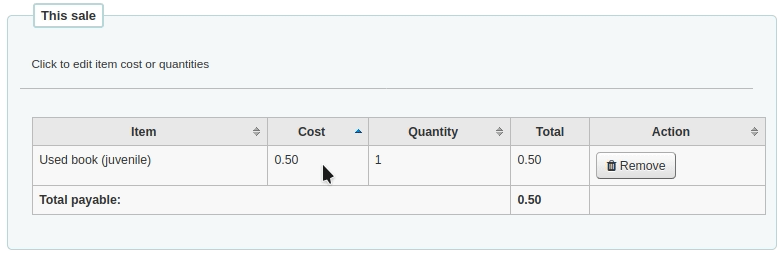

Cash management
Koha includes a number of options for dealing with monetary transactions and actions to allow for fine grained tracking of these processes for audit and analytic processes.
Cash registers
Cash registers can be used to track transactions to a specific location in your library. This can be especially helpful for detailing where cash has been taken for payments and then when this cash is subsequently removed and taken to the bank.
Setup
To enable the use of cash registers, you must turn on the UseCashRegisters system preference.
You can then configure cash registers for your library from the cash registers page in the administration module.
Library details
Get there: Home > Tools > Cashup registers
A summary of transaction amounts associated to a libraries cash registers can be found under the ‘Cashup registers’ tool. The summary will list registers associated with your logged in branch alongside information about how much money should be found in each register, what is available to take to the bank and a breakdown of income vs outgoings.
Note: You can also access this page from the left hand menu available on the Point of sale page when that module is enabled.
Register details
Get there: Home > Tools > Cashup registers > Register name
A list of all transactions to have taken place at a register is available by clicking on the cash register name from the library details page.
If you have the correct permissions, you can re-print receipts, issue refunds and record cashups from this page.
Cashup
The action of ‘cashing up’ can be recorded against a cash register from both the library details and register details pages.
Clicking the Record cashup button will simply record the date and time that the action has taken place and is intended to allow the regular record of when money is collected from the cash register and taken to the bank.
Both of the above pages utilize the cashup record to limit the display of transactions/summaries to only pertinent information, since the last cashup.
Once a cashup has taken place, a summary of the transactions taken during that cashup period is available for display, and printing, via the Summary link found next to the last cashup date on the register details page.

Point of sale
Point of sale is a module designed for selling items to people who are not registered at the library or to make sales that do not need to be linked to a patron account.
For example, you can sell used books or promotional items. These items can be sold to anyone and you don’t need to link the sale to a particular patron.
For invoices that need to be linked to a patron’s account (like a lost item or new card fee), use manual invoicing.
Get there: More > Point of sale
Setup
To enable the point of sale module, you must turn on the EnablePointOfSale system preference.
If it’s not already done, you must also enable the UseCashRegisters system preference.
Make sure you configure your cash registers in the administration module.
Finally, you must add items that you will be selling in the debit types section of the administration module.
Making a sale
When you first go in the point of sale module, the left side will show all the items for sale. These are debit types that were marked as ‘Can be sold’.
Note
You can customize the columns of this table in the ‘Table settings’ section of the Administration module (table id: invoices).
On the right side is the current sale.

Click on the ‘Add’ button next to the items to add to the current sale.
If you need to change the cost or the quantity, click on the amount on the right side and it will become an input box where you can enter the correct amount.
